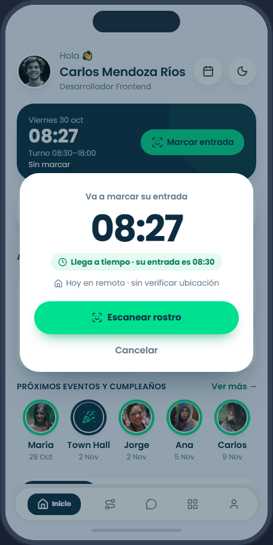
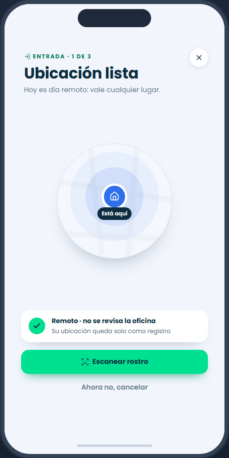

Marca su entrada desde el celular
BR‑ASI‑001, BR‑ASI‑007, BR‑ASI‑010 · W‑ASI‑21
Situación
Dado que Carlos trabaja hoy en remoto y su turno empieza a las 08:30 · Cuando toca «Marcar entrada» a las 08:27 · Entonces ve primero una ventana para confirmar (la hora, si llega a tiempo, dónde marca) y recién después pasa a la ubicación y al rostro.
Datos
Carlos Mendoza Ríos · Oficina 08:30–18:00 · Híbrido (oficina martes y jueves) · viernes 30 oct = remoto.
Calcula
remoto → no se revisa la geocerca; la ubicación queda solo como registro hora de la marca = la del servidor, al segundo (no la del celular)
Para probarlo
como Carlos › celular › Inicio › «Marcar entrada».
En el código
components/asistencia/Marcador.jsx (los pasos), context/AsistenciaContext.jsx › marcar().Qué mirar
la ventana de confirmar va antes de escanear; en remoto dice «no se revisa la oficina».

